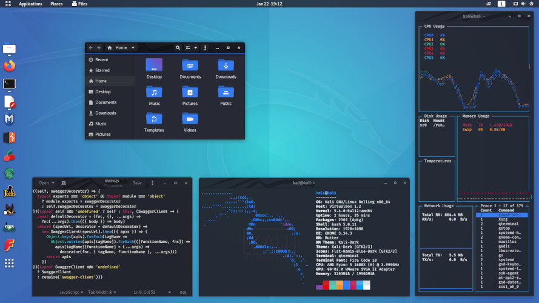

Kali Linux no se trata de sus herramientas, ni del sistema operativo. Kali Linux es una plataforma .
Puede tomar cualquier Linux e instalar herramientas de pentesting en él, pero debe configurar las herramientas manualmente y configurarlas. Kali está optimizado para reducir la cantidad de trabajo, por lo que un profesional puede simplemente sentarse e irse.
Una versión de Kali siempre está cerca de ti, sin importar dónde la necesites. Los dispositivos móviles, Docker, ARM, Amazon Web Services, el subsistema de Windows para Linux, Virtual Machine, bare metal y otros están disponibles .
Con el uso de metapaquetes , optimizados para las tareas específicas de un profesional de seguridad, y un proceso de personalización ISO altamente accesible y bien documentado , siempre es fácil generar una versión optimizada de Kali para sus necesidades específicas.
Ya sea que sea un veterano experimentado o un novato, nuestra documentación tendrá toda la información que necesitará saber sobre Kali Linux. Hay varios consejos y "recetas" disponibles para ayudar a disipar dudas o resolver cualquier problema. Toda la documentación está abierta, por lo que puede contribuir fácilmente.
Kali Linux, con su linaje BackTrack , tiene una comunidad vibrante y activa . Hay foros activos de Kali, canal IRC, listados de Kali Tools, un sistema abierto de seguimiento de errores e incluso sugerencias de herramientas proporcionadas por la comunidad.
Xfce es un entorno de escritorio ligero para sistemas operativos tipo UNIX. Su objetivo es ser rápido y con pocos recursos del sistema, sin dejar de ser visualmente atractivo y fácil de usar. Xfce consta de piezas empaquetadas por separado que juntas brindan todas las funciones del entorno de escritorio, pero se pueden seleccionar en subconjuntos para satisfacer las necesidades y preferencias del usuario. Este es el entorno de escritorio predeterminado de Kali.

Cada parte de GNOME Shell ha sido diseñada para que sea simple y fácil de usar. El resumen de actividades es una manera fácil de acceder a todas sus tareas básicas. Solo se necesita presionar un botón para ver las ventanas abiertas, iniciar aplicaciones o verificar si tiene mensajes nuevos. Tener todo en un solo lugar es conveniente y significa que no tiene que aprender a abrirse camino a través de un laberinto de diferentes tecnologías.
El plasma está hecho para mantenerse fuera del camino, ya que lo ayuda a hacer las cosas. Pero bajo su superficie liviana e intuitiva, es una potencia. Así que eres libre de elegir formas de uso justo cuando las necesitas y cuando las necesitas. Con Plasma el usuario es el rey. ¿No estás contento con la combinación de colores? ¡Cambialo! ¿Quieres tener tu panel en el borde izquierdo de la pantalla? ¡Muévelo! ¿No te gusta la fuente? ¡Usa uno diferente! Descargue widgets personalizados con un solo clic y agréguelos a su escritorio o panel.

Arch Linux es una distribución de Línux desarrollada de forma independiente y optimizada para procesadores i686- y x86_64 dirigida a usuarios de Línux competentes. Usa "pacman", su gestor de paquetes desarrollado por ellos mismos para proveer de actualizaciones a las aplicaciones más nuevas con completo rastreo de dependencias. Operando sobre un sistema de actualizaciones acumulativas, Arch puede ser instalado desde una imagen de CD o vía un servidor FTP.
Mas informacion
El Proyecto Debian es una asociación de individuos que han hecho un frente común para crear un sistema operativo libre. Este sistema operativo es llamado Debian. Los sistemas Debian actualmente usan el kernel Línux. Línux es una pieza de software completamente libre iniciada por Linus Torvalds y apoyada por miles de programadores en el mundo. Por supuesto, lo que la gente quiere es software de aplicación: Programas que les ayuden a lograr lo que ellos quieran hacer, esto es, desde editar documentos para manejar un negocio hasta jugar juegos o escribir más software.
Mas informacionUbuntu es un completo sistema operativo Línux de escritorio, disponible gratuitamente con soporte tanto de la comunidad como profesional. La comunidad Ubuntu está construida sobre las ideas consagradas en el Manifiesto de Ubuntu: Que el software debe estar disponible libre de cargos, que las herramientas informáticas deben ser usables por gente en su propia lengua y a pesar de cualquier discapacidad, así como el que la gente debe poseer la libertad de personalizar y modificar sus programas en cualesquier forma que les parezca. "Ubuntu" es una antigua palabra africana que significa "humanidad para los otros".
Mas informacion.png)